Площадь теплообмена составляет 74% от общей площади пластины. Максимальное использование полезной площади уменьшает вес и габариты готового изделия, что обеспечивает компактность изготовленного из наших пластин теплообменника.
Пластины теплообменника изготавливаются из нержавеющей стали марки AISI316, AISI321, AISI304 (толщины 0.4mm, 0.5mm, 0.6mm) и титана. Пластины адаптированы к Российским условиям эксплуатации (заложен запас динамики в случае плохой водоподготовки).
На каждой пластине теплообменника Вы найдете маркировку (номер партии металла, марка стали и толщина).
Производство теплообменных пластин локализовано на предприятии. Нержавеющая сталь проходит централизованную проверку на соответствие заявленной марке. Далее обрубается заготовка пластины и формуется в готовое изделие. Пластины проходят проверку на микротрещины в специальном оборудовании. Также готовый теплообменный аппарат испытывается на стенде под повышенным гидравлическим давлением.
Каждые две пластины пластинчатого теплобменника и уплотнение между ними формируют канал. Виды каналов: HH, HL, LL в зависимости от того какие пластины его формируют. Алгоритм расчёта пластинчатого теплообменника позволяет оптимизировать количество пластин, тем самым снизив стоимость теплообменника без потери его эффективности.
Алгоритм расчёта пластинчатого теплообменника позволяет оптимизировать количество пластин, тем самым снизив стоимость теплообменника без потери его эффективности.
Препятсятвует разрыву и клип не слетает.
Два бурта уплотнения противостоят давлению внутри теплообменника.